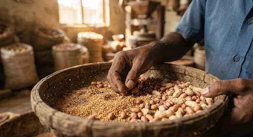
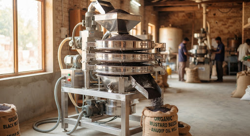
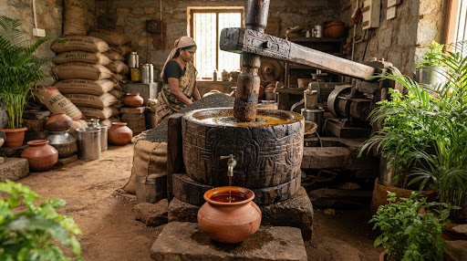
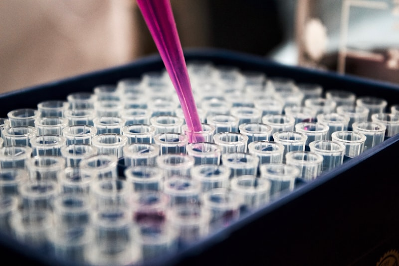
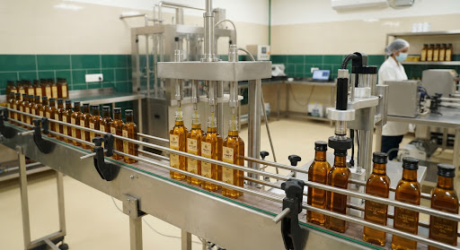

7 Sequential Stages of Extraction
Discover how carefully selected seeds become golden, unadulterated edible oils through our time-honored artisanal method.

Stage 01Seed Selection & Sourcing
We carefully select hand-graded, non-GMO oil seeds directly from trusted regional farmers, screening for optimal moisture content, rich natural oil yield, and pristine maturity before extraction.

Stage 02Hygienic Cleaning & Grading
The selected seeds pass through thorough mechanical air-cleaning, vibrating sieves, and de-stoners to eliminate chaff, micro-dust, and impurities, ensuring only pristine, clean seeds enter the press.
 Stage 03
Stage 03
Natural Sun Preparation
Seeds and coastal copra halves are naturally sun-cured on hygienic raised platforms under open sunshine to maintain ideal moisture balance for gentle extraction without chemical drying agents.

Stage 04Slow Traditional Wood Pressing
Prepared seeds are slowly pressed in authentic Vaagai wooden pestles (Mara Chekku) rotating at gentle RPM. The wood absorbs friction heat, guaranteeing temperatures stay below 45°C to preserve live nutrients.
 Stage 05
Stage 05
Natural Cotton Cloth Filtering
Freshly extracted oil rests patiently in food-grade tanks for natural gravity settling, then passes gently through clean, unbleached cotton cloth to separate fine seed sediments naturally.

Stage 06Purity & Quality Inspection
Each production batch is tested for FFA, peroxide value, moisture level, aroma, and golden color clarity to verify complete absence of mineral oils, argemone, or artificial stabilizers.

Stage 07Sterile Bottling & Delivery
The finished oil is filled into sterilized glass bottles and food-grade containers, sealed with airtight tamper-evident caps to preserve wholesome freshness from our mill straight to your doorstep.